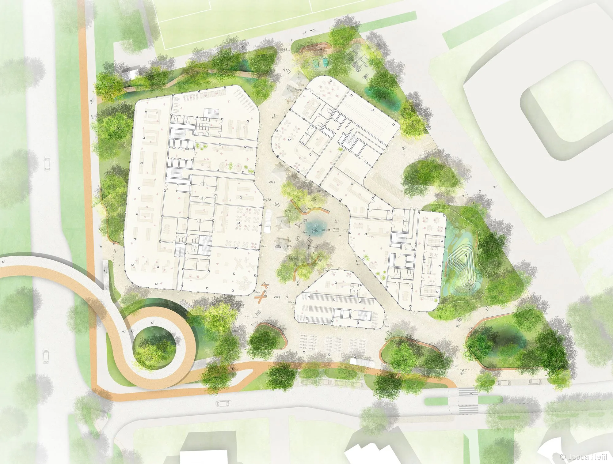
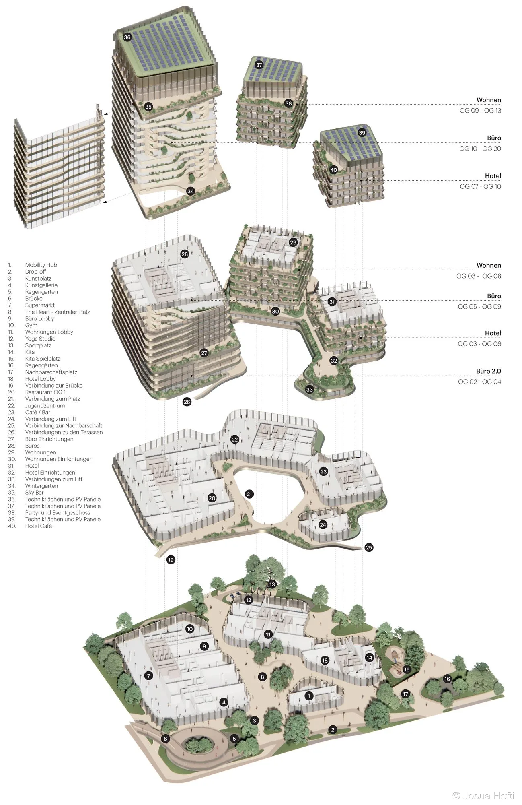
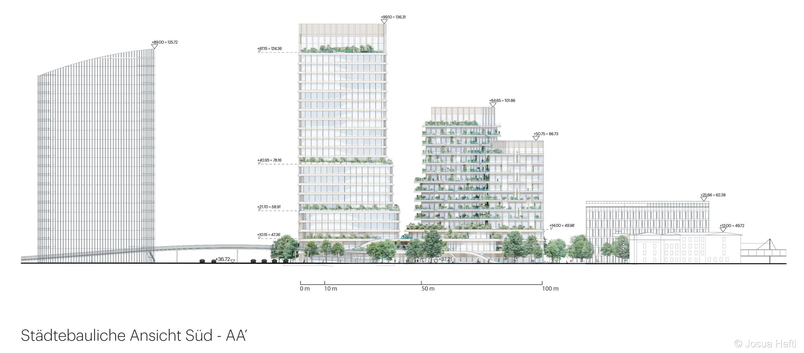
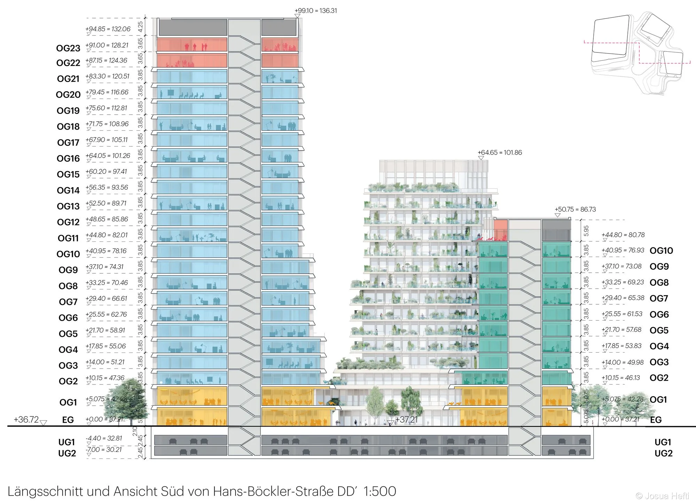

CAN ARCHITECTURE PROMOTE A FEELING OF TOGETHERNESS?
// NEW HEART DÜSSELDORF //
MVRDV - GERMAN STUDIO
The Golzheim district in Düsseldort should develop a new notion of centrality.
Between office buildings and transportation axes, a new central heart should be created. Supposedly introducing a new pulse, beating for togetherness.
While confidently asserting its position as a landmark in the Düsseldorf skyline, the new design proposal is stepping out at the bottom,
creating private and public terraces, and opening up to all sides on the ground floor. It seeks a dialogue with the surrounding buildings,
not only visually, but also through means of transportation or leisure. The central square, the new heart, is to be claimed and defined by its users,
the people of the district. All parts of the building's groundfloor open towards this central square, which offers a wide range of activities.





